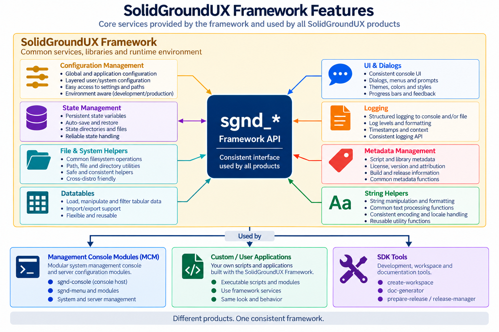
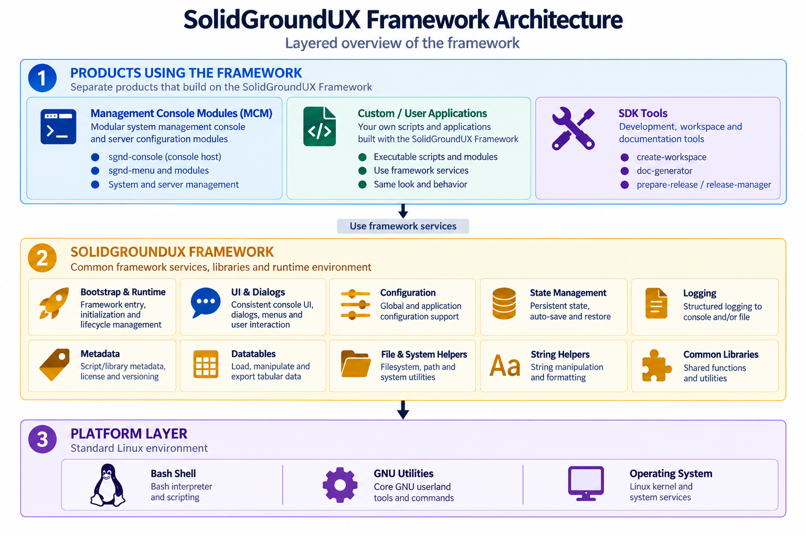
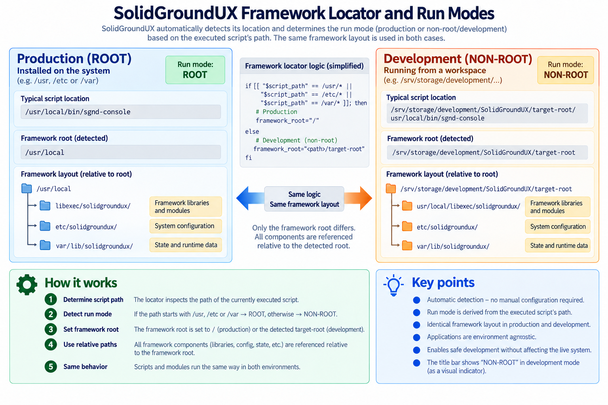

During a period in which I found myself lacking mental challenges in my current project, I decided to explore the Linux world. Frustrated with the current software market, I envisioned creating a subscription-free, vendor-neutral, on-site software solution. This started with configuring a few VMs, which quickly led to needing to learn Bash. I received a lot of help with syntax from ChatGPT, but I quickly concluded that I didn't want to have to type printf, read, and other boilerplate every time I wanted to communicate with the user or request input.
Coming from the C#/.NET ecosystem required some adjustment, especially letting go of object-oriented thinking. Even so, I found myself constantly looking for ways to make things more modular, reusable, and consistent.
To make a long story short, six months later I present to you SolidGroundUX: a modular, reusable, consistent, and hopefully enjoyable framework for building console applications in Bash. Not bad for a first Bash project. I haven't configured a single VM since I started building it, so I sometimes wonder whether the original plan still works... Meanwhile, another 3 months later, having now configured many VMs in minutes rather than hours, we're at version 2.1. The framework is broader, cleaner, and architecturally grounded. What started as a way to make configuring a few Linux servers less tedious has become a framework for building, deploying, managing, and documenting them consistently.
I'm releasing this software on GitHub under the Testadura Non-Commercial License (TD-NC) v1.1. This means you can use it free of charge for non-commercial purposes, even within a commercial environment. However, if you wish to use it as part of a commercial product or project, we will need to discuss licensing terms.
I hope this framework makes someone's life a little easier. If you have suggestions for improvements, discover a bug, or would like to contribute, feel free to reach out.
The name SolidGround originates from a .NET ETL orchestration framework that I have been developing over the past ten years. That product is currently awaiting its adaptation to Linux and the Avalonia UI framework, after which it is intended to be released as a commercial product in the hopefully near future.
The name SolidGroundUX is a nod to that project and reflects the same philosophy: providing solid, practical foundations on which other software can be built.
SolidGroundUX is the runtime framework for structured Bash applications. It provides bootstrap and execution conventions, argument handling, configuration and state, logging, terminal UI primitives, reusable libraries, metadata support, and common APIs used by applications built on the framework.
Version 2.1 separates that runtime from two products built around it:
MCM and SDK both depend on the Framework. They are sibling products and do not depend on each other. This boundary keeps the installed runtime small while allowing management and development tooling to evolve independently.

Executables begin with the lightweight framework locator, load `sgnd-exe-common.sh`, and then enter the normal bootstrap sequence. Bootstrap establishes the runtime environment, global definitions, configuration/state, logging, UI support, and any additional libraries declared by the executable.
Applications declare additional Framework libraries through `SGND_USING`. Bootstrap resolves and loads those dependencies after the core runtime is available.
The Framework provides a common model for built-in and application arguments, layered configuration, persistent state, validation, and transfer of selected values between invocations.
Screen messaging, file logging, themes, palettes, title bars, sections, typed prompts, dialogs, and menu primitives share one vocabulary and one runtime policy.
Common libraries provide metadata/header parsing, datatable helpers, system helpers, menu mechanics, and other functionality that is useful across multiple applications. Product-specific behavior stays with the product that owns it.
The Management Console Modules product owns the management-console host, public `sgnd-console` command, module discovery/lazy loading, and server-management modules. The SDK owns project/workspace tooling, documentation generation, deployment tooling, release preparation, release management, and development templates.

The Framework is the shared runtime beneath independently installable products and applications. Applications consume public Framework APIs; product-specific orchestration remains outside the Framework itself.

`SGND_FRAMEWORK_ROOT` describes the contextual root from which the executable is running. It is `/` for an installed execution and normally a repository `target-root` for a development execution.
Framework-owned resources are not assumed to live beneath that contextual root. `sgnd_framework_resolve_path` first uses the contextual tree when that tree actually contains a Framework installation; otherwise it resolves the resource from the installed Framework under `/`. A development MCM or SDK tree can therefore run its own code while consuming the installed Framework without changing `SGND_FRAMEWORK_ROOT`.

Startup deliberately has a small pre-bootstrap boundary:
The locator and executable-common layer must work before the full Framework runtime exists. Once bootstrap has completed, applications should use normal Framework APIs rather than duplicating root, configuration, or library-resolution logic.
SolidGroundUX uses naming conventions to distinguish public APIs from internal implementation details.
Public framework functions use `sgnd_*` and are intended for application and tool consumers.
Framework-internal functions use `_sgnd_*`. They are effectively protected: other cooperating SolidGroundUX libraries may depend on them, but they are not part of the supported application-facing API.
Plain leading-underscore helpers such as `_helper` are local/private implementation details belonging to one script or module. Bash cannot enforce these access levels, but the convention communicates intended ownership. Consumers should rely on the public `sgnd_*` surface unless they are implementing framework internals.
One of the primary design goals of SolidGroundUX is reducing repetitive code.
Common functionality such as argument processing, configuration loading, state management, user interaction, documentation generation, and deployment support are implemented once and reused throughout the framework.
Developers remain free to override framework behavior when necessary, but most applications can rely on framework conventions and focus primarily on business logic.